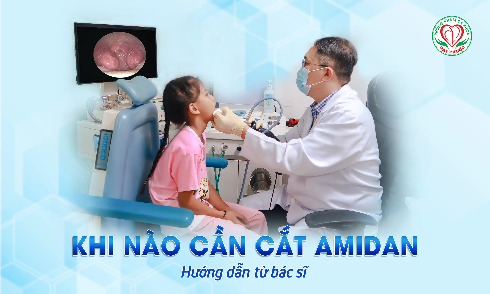
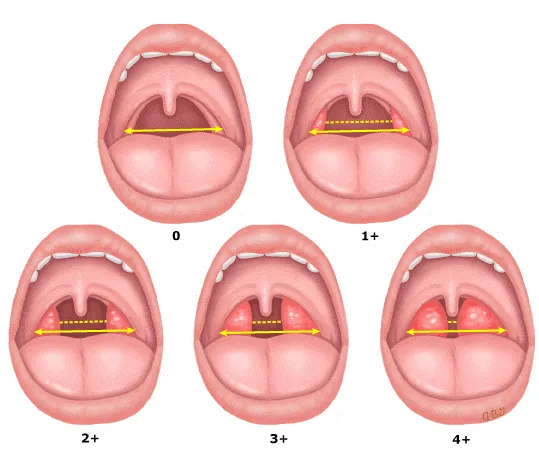
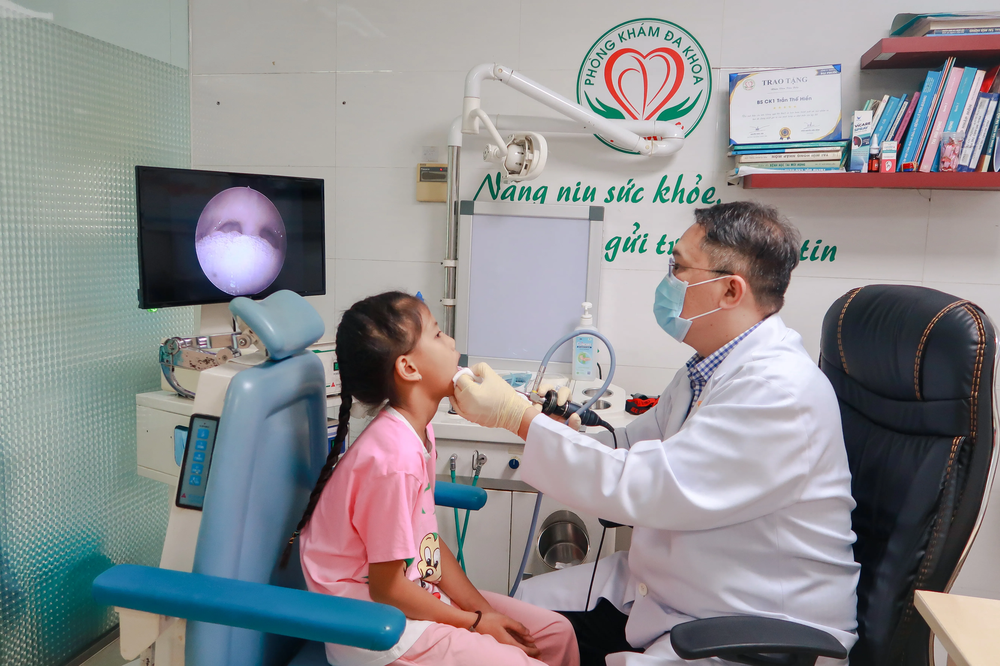

Viêm Amidan Ở Trẻ: Khi Nào Cần Cắt Amidan? Hướng Dẫn Từ Bác Sĩ Chuyên Khoa

Viêm Amidan Ở Trẻ: Khi Nào Cần Cắt Amidan? Hướng Dẫn Từ Bác Sĩ Chuyên Khoa
Viêm amidan là bệnh lý phổ biến ở trẻ em, nhưng không phải trường hợp nào cũng cần cắt amidan. Nhiều phụ huynh lo lắng khi con hay bị viêm amidan và thắc mắc "Khi nào cần cắt amidan cho con?", "Cắt amidan có nguy hiểm không?", "Con mình có cần phẫu thuật không?".
Quyết định cắt amidan cần được cân nhắc kỹ lưỡng dựa trên tình trạng cụ thể của từng trẻ. Hiểu rõ các chỉ định cắt amidan sẽ giúp cha mẹ đưa ra quyết định đúng đắn cho con em mình.
Amidan Là Gì Và Vai Trò Với Sức Khỏe Trẻ?
Amidan là hai khối mô bạch huyết nằm ở hai bên cổ họng, có vai trò quan trọng trong hệ miễn dịch của trẻ, đặc biệt trong 3 năm đầu đời.
Chức năng của amidan:
-
Bẫy vi khuẩn, virus xâm nhập qua mũi miệng
-
Sản xuất kháng thể để chống virus, vi trùng
-
"Huấn luyện" hệ miễn dịch nhận biết mầm bệnh
-
Bảo vệ đường hô hấp và tiêu hóa
Tại sao trẻ em hay bị viêm amidan?
-
Hệ miễn dịch chưa hoàn thiện
-
Tiếp xúc nhiều virus, vi khuẩn tại trường học
-
Amidan làm việc "quá tải" trong việc chống nhiễm
Phân Độ Amidan - Khi Nào Gọi Là "To"?
Bác sĩ phân chia kích thước amidan thành 4 độ để đánh giá:

Độ I (Bình thường):
-
Amidan nhỏ, nằm gọn trong hốc amidan
-
Không ảnh hưởng hô hấp, nuốt
-
Không cần can thiệp
Độ II (Hơi to):
-
Amidan lớn hơn, nhưng chưa chạm vào nhau
-
Có thể gây khó nuốt nhẹ
-
Theo dõi, chưa cần phẫu thuật
Độ III (To nhiều):
-
Amidan gần chạm nhau ở giữa
-
Gây khó nuốt, ngủ ngáy
-
Cân nhắc phẫu thuật nếu có triệu chứng
Độ IV (Rất to):
-
Amidan chạm nhau, gần tắc hết họng
-
Khó thở, khó nuốt nghiêm trọng
-
Cần cắt amidan trong hầu hết trường hợp
Khi Nào Cần Cắt Amidan? - Chỉ Định Chính Xác
1. Viêm Amidan Tái Phát Thường Xuyên
Tiêu chuẩn chỉ định:
-
>4 lần viêm amidan/năm
-
Hoặc 3 lần/năm trong 2 năm liên tiếp
-
Mỗi lần viêm kèm sốt cao, đau họng dữ dội
-
Kháng sinh điều trị kéo dài trên 2 tuần
Tác động đến trẻ:
-
Nghỉ học nhiều
-
Sử dụng kháng sinh thường xuyên
-
Ảnh hưởng phát triển và học tập
-
Giảm chất lượng cuộc sống
2. Biến Chứng Nghiêm Trọng Của Viêm Amidan
Áp xe quanh amidan:
-
Mủ tích tụ xung quanh amidan
-
Gây đau dữ dội, khó nuốt
-
Cần mổ cấp cứu dẫn lưu mủ
- 2 tháng sau điều trị cần cắt amidan
Biến chứng toàn thân:
-
Viêm khớp do streptococcus
-
Thấp tim ảnh hưởng tim mạch
-
Viêm cầu thận gây suy thận
-
Nhiễm trùng huyết (hiếm)
3. Amidan Quá Phát Gây Triệu Chứng
Khó thở:
-
Thở khó khăn, đặc biệt khi nằm
-
Ngủ ngáy to, ngưng thở khi ngủ
-
Phải thở miệng thay vì thở mũi
Khó nuốt:
-
Ăn uống chậm, khó khăn
-
Chỉ ăn được đồ lỏng, mềm
-
Sụt cân do ăn kém
Ảnh hưởng giấc ngủ:
-
Ngủ ngáy ảnh hưởng cả gia đình
-
Ngưng thở khi ngủ- nguy hiểm
-
Ngủ không sâu giấc, mệt mỏi ban ngày
Triệu chứng khác:
-
Hôi miệng do vi khuẩn tích tụ
-
Giọng nói khàn hoặc "bí"
-
Khó tập trung do thiếu oxy
4. Các Trường Hợp Đặc Biệt
U amidan:
-
Khối u lành tính hoặc ác tính
-
Cần cắt bỏ để chẩn đoán mô bệnh học
Chảy máu amidan tái phát:
-
Chảy máu không rõ nguyên nhân
-
Có thể do amidan mạn tính hoặc u
Tuổi Thích Hợp Để Cắt Amidan
Nguyên Tắc Chung:
Từ 3-6 tuổi:
-
Chỉ cắt khi thật cần thiết
-
Ví dụ: Ngưng thở khi ngủ nghiêm trọng
-
Áp xe amidan tái phát
-
Amidan độ IV gây khó thở
Từ 6 tuổi trở lên là độ tuổi lý tưởng vì:
-
Hệ miễn dịch đã ổn định hơn
-
Trẻ hiểu được và hợp tác tốt
-
Thời gian hồi phục nhanh
-
Hiệu quả điều trị cao
Khi Nào KHÔNG Nên Cắt Amidan?
Các Trường Hợp Chống Chỉ Định
Trẻ quá nhỏ (dưới 3 tuổi):
-
Amidan còn vai trò quan trọng cho miễn dịch
-
Rủi ro phẫu thuật cao
-
Chỉ cắt khi có nguy hiểm tính mạng
Đang bị nhiễm trùng cấp:
-
Viêm amidan cấp tính
-
Sốt, ho, cảm lạnh
-
Phải chờ khỏi bệnh 2-3 tuần
Có bệnh lý nền:
-
Rối loạn đông máu (hemophilia)
-
Bệnh tim mạch nặng
-
Suy giảm miễn dịch nghiêm trọng
Viêm amidan nhẹ, ít tái phát:
-
Chỉ viêm 1-2 lần/năm
-
Triệu chứng nhẹ, dễ điều trị
-
Không cần thiết phẫu thuật
Những Quan Ngại Của Phụ Huynh
"Cắt Amidan Có Giảm Sức Đề Kháng Không?"
Sự thật:
-
Ở trẻ dưới 3 tuổi: Có thể ảnh hưởng một ít
-
Ở trẻ trên 5 tuổi: Ảnh hưởng không đáng kể
-
Các cơ quan miễn dịch khác sẽ bù đắp
-
Lợi ích > tác hại khi có chỉ định đúng
"Phẫu Thuật Có Nguy Hiểm Không?"
Rủi ro thấp:
-
Tỷ lệ biến chứng < 2%
-
Chảy máu: 1-2% (có thể xử lý được)
-
Nhiễm trùng: < 1%
-
Tử vong: Cực hiếm (< 0.001%)
An toàn cao khi:
-
Bác sĩ có kinh nghiệm
-
Bệnh viện đầy đủ trang thiết bị
-
Trẻ khỏe mạnh, không bệnh nền
Quy Trình Đánh Giá Trước Phẫu Thuật

Bước 1: Khám Lâm Sàng Kỹ Lưỡng
Bác sĩ sẽ đánh giá:
-
Tần suất viêm amidan trong 1-2 năm qua
-
Kích thước amidan (độ I-IV)
-
Triệu chứng ảnh hưởng sinh hoạt
-
Biến chứng đã xảy ra
Bước 2: Xét Nghiệm Cần Thiết
Xét nghiệm máu:
-
Công thức máu toàn phần
-
Thời gian đông máu (PT, PTT)
-
Chức năng gan, thận...
Xét nghiệm khác:
-
Cấy khuẩn họng (nếu cần)
-
Test dị ứng thuốc gây mê
Bước 3: Tư Vấn Chi Tiết
Bác sĩ sẽ giải thích:
-
Lý do cần cắt amidan
-
Quy trình phẫu thuật
-
Rủi ro có thể xảy ra
-
Chăm sóc sau mổ
Lời Khuyên Từ Bác Sĩ Chuyên Khoa
Khi Nào Nên Tham Khảo Ý Kiến Bác Sĩ
Đưa trẻ đi khám nếu:
-
Viêm amidan quá thường xuyên (>3 lần/năm)
-
Ngủ ngáy to, ngưng thở khi ngủ
-
Khó nuốt ảnh hưởng ăn uống
-
Sụt cân không rõ nguyên nhân
-
Hôi miệng dai dẳng
Câu Hỏi Nên Hỏi Bác Sĩ
-
"Con có thật sự cần cắt amidan không?"
-
"Có thể theo dõi thêm được không?"
-
"Rủi ro của phẫu thuật là gì?"
-
"Sau mổ con có bị giảm sức đề kháng không?"
-
"Thời gian hồi phục mất bao lâu?"
Phòng Ngừa Viêm Amidan Tái Phát
Tăng Cường Sức Đề Kháng
-
Dinh dưỡng đầy đủ, nhiều vitamin C
-
Vận động thường xuyên
-
Ngủ đủ giấc 8-10 tiếng/ngày
Vệ Sinh Cá Nhân
-
Rửa tay thường xuyên
-
Không dùng chung ly, chén với người bệnh
-
Súc miệng nước muối loãng
Môi Trường Sống
-
Tránh khói thuốc lá
-
Không khí sạch, độ ẩm phù hợp
-
Hạn chế tiếp xúc người bệnh
Kết Luận Quan Trọng
Cắt amidan không phải là giải pháp cho mọi trường hợp viêm amidan. Quyết định này cần được đưa ra cẩn thận dựa trên:
-
Tần suất viêm và mức độ nghiêm trọng
-
Ảnh hưởng đến chất lượng cuộc sống của trẻ
-
Tuổi của trẻ và tình trạng sức khỏe tổng thể
-
Ý kiến của bác sĩ chuyên khoa tai mũi họng
Điều quan trọng nhất là tham khảo ý kiến bác sĩ chuyên khoa để được đánh giá cụ thể và tư vấn phù hợp. Mỗi trẻ có tình trạng khác nhau, và quyết định cắt amidan cần được cân nhắc kỹ lưỡng để đảm bảo lợi ích tốt nhất cho con.
Bài viết chỉ mang tính chất tham khảo y tế. Khi trẻ có triệu chứng viêm amidan, hãy đưa đi khám để được chẩn đoán và tư vấn chính xác từ bác sĩ chuyên khoa.

Các tin khác


ĐĂNG KÝ NHẬN BẢN TIN

Phòng Khám Đa Khoa Đại Phước
- 829 đường 3 tháng 2, Phường Minh Phụng, Thành phố Hồ Chí Minh
- 1900 599 941 - 0938 829 831
- (028) 3955 7999
- info@ytedaiphuoc.vn
-

6:00 - 11:30 (Chủ Nhật)


GPKD số : 0312023683 cấp ngày: 29/10/2012 Bởi Sở Kế Hoạch và Đầu Tư TP.Hồ Chí Minh
Đại diện: Tống Nguyễn Diễm Hồng